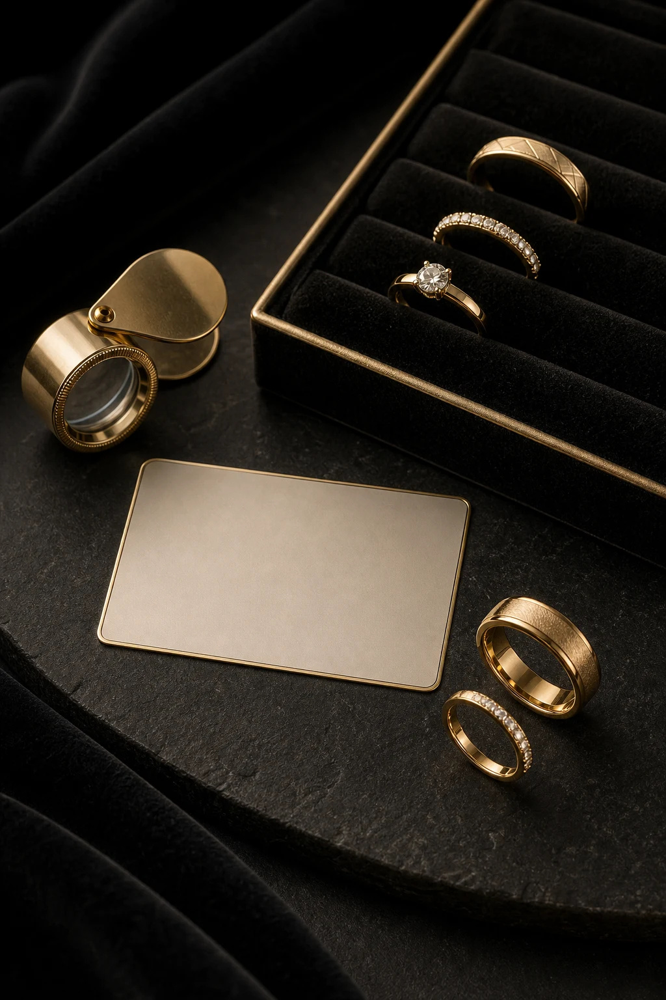
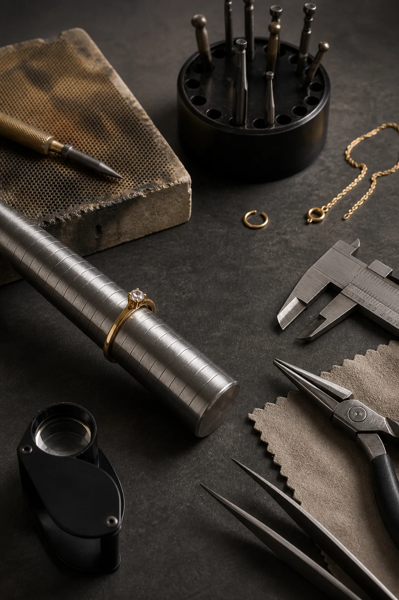
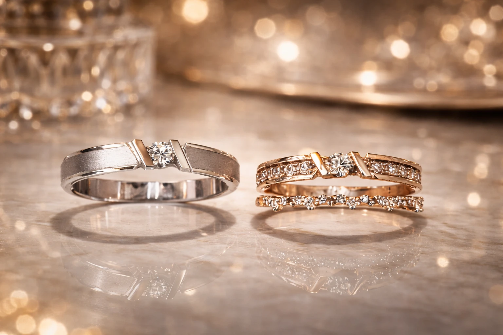

QUICK START
무엇이 필요하세요?

ABOUT US
세공 경력 30년,
세공 경력 30년,
신뢰를 쌓아왔습니다
귀족은 서울 종로3가 귀금속 거리, 종묘귀금속백화점에서 2004년부터 운영 중인 금은방입니다. 세공 경력 30년의 장인이 정확한 납기와 일관된 품질, 투명한 가격을 지키며 직접 제작합니다.
돌반지·커플링·결혼예물 주문제작부터 14K·18K·24K 순금 도매, 금·은 매입, 반지 사이즈 조절과 세공 수리까지 한자리에서 해결하실 수 있습니다.
30+YEARS OF CRAFT
도매WHOLESALE
주문제작CUSTOM
CATEGORY
갤러리 전체 보기 ›
품목·서비스별 안내
찾으시는 항목을 고르시면 소재·제작 기간·상담 기준을 함께 보실 수 있습니다
GALLERY
갤러리 41개 전체 보기 ›
직접 만든 디자인을 보세요
사진 속 디자인을 기준으로 소재·사이즈를 바꿔 주문하실 수 있습니다
GUIDE
가이드 97개 전체 보기 ›
상담 전에 보면 좋은 가이드
실제 문의에서 가장 많이 나온 질문을 기준으로 정리했습니다
PROCESS
제작 · 수리 과정
상담부터 수령까지, 정확하고 투명하게 진행됩니다
01상담
원하시는 디자인과 예산·수령일 상담
02견적 확인
중량·공임과 당일 시세 기준 견적 안내
03제작 · 수리
숙련된 장인이 매장에서 직접 세공
04검수 · 전달
마감·사이즈 검수 후 안전하게 전달
REPAIR
수리 안내 자세히 보기 ›
수리 · AS 서비스
소중한 주얼리, 새것처럼 — 30년 경력의 장인이 직접 수리합니다
반지 사이즈 조절늘리기·줄이기 당일 접수
세척 · 광택 복원금·은 세척과 폴리싱
화이트골드 재도금변색·광택 기준 안내
체인 수리끊어짐·잠금장치 교체
보석 재세팅큐빅 빠짐·발 보강
귀걸이 침 수리휘어짐·부러짐 점검

당일 접수반지 사이즈 조절은 당일 접수 가능합니다
GOLD PURCHASE
금 · 은 매입과 돈수 계산
순도와 중량을 확인해 당일 시세로 안내합니다
매입 품목
감정 결과와 최종 금액 확인 후 당일 지급합니다
- 금순금(24K), 18K, 14K, 골드바
- 은순은, 실버바, 은 장신구
- 기타백금, 금니, 부서진 귀금속
- 확인 후 당일 지급순도·중량 측정 후 최종 금액 안내
금 돈수 계산기
돈·그램을 환산하고 순도별 실제 금 함량을 확인하세요
순도
환산 무게
—
순금 함량 (24K 순금)
—
1돈 = 3.75g 기준입니다. 실제 견적은 당일 시세와 공임에 따라 달라지므로 금 시세 보는 법 가이드와 상담으로 안내해드립니다.
VISIT
방문 안내
언제든 편하게 방문해 주세요
- 주소
- 서울 종로구 종로 173 종묘귀금속백화점 101호
- 영업시간
- 매일 10:30 – 18:30 · 매달 셋째 주 화요일 휴무
- 연락처
- 02-766-4789
- 상담
- 카카오톡 오픈채팅 · 전화 상담
[ 지도 — 실제 페이지에서는 현재 LandingLocation 컴포넌트 사용 ]

소중한 가치를 위한 첫걸음
지금 상담을 시작하세요
사진과 소재·사이즈·희망일을 보내주시면 더 빠르게 안내해드립니다.